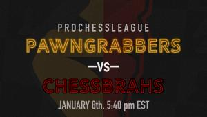

Pawngrabbers vs. Chessbrahs
Recap of Pawngrabbers vs. Chessbrahs, Dec 7, 2017
After a flat-footed performance to start the 2019 PRO Chess League campaign, the Pittsburgh Pawngrabbers were outpaced by a motivated Montreal Chessbrahs unit. For Montreal, GM Ivan Saric put together a perfect 4/4 performance from top board, and coupled with GM Eric Hansen's 3/3 start to the match, the Chessbrahs built an insurmountable lead by the end of the period.
After the match, Pittsburgh Pawngrabbers General Manager Isaac Steincamp tweeted:
Not an ideal start tonight for the @pghpawngrabbers, and we'll have to evaluate our weaknesses as a team moving forward. Rebuild, reload, bring our 💯 game for @NYMarshalls next week.
— Isaac Steincamp (@isaackaito) January 9, 2019
Shoutout to @chessbrahTV tonight - that was quite the statement return to the @PROChessLeague!
A needed change to reach a quick recovery for Pittsburgh entails better time management across all boards for the Black and Gold. Adjusting to the rapid time controls in the PRO Chess League is difficult, but is essential to regular season success.
While the scoreline proved to be disappointing for the Pittsburgh fanbase, the Pawngrabbers did find ways to frustrated the Chessbrahs throughout the match. Last season's PRO Chess League MVP, GM Awonder Liang, scored Pittsburgh's first point of the campaign against an underrated Brandon Eshleman using the Black pieces to outplay the Ruy Lopez, in a position that played a lot like a King's Indian Defense:
Trailing Montreal 1-3 after the first period, GM Alexander Shabalov momentarily halved the deficit by doubling down on the Chessbrah board 4. It was a rare sight, but watching the 2015 US Chess Hall of Fame Inductee play the London System showed his true range in style:
Post Match Thoughts
While Pittsburgh succeeded in steering the script and avoiding its worst loss in franchise history, the mark is obviously higher given the deep roster, perhaps Monday's signing release of GM Sergey Erenburg will give the Pawngrabbers the competitive edge that fans got used to seeing last season:
🚨 BREAKING NEWS 🚨 GM Sergey Erenburg has signed with the Pittsburgh Pawngrabbers for the 2019 @PROChessLeague season. The three-time Israeli national champ and two-time @US_ChessLeague All Star will be the highest rated player in franchise history! #nervesofsteel pic.twitter.com/YUCRkMLedK
— Pittsburgh Pawngrabbers (@pghpawngrabbers) January 7, 2019
The key for the Pawngrabbers heading into next week's match with New York is not to panic. The result against the Chessbrahs and the magnitude of the loss were both not ideal ways to start the season, but the 2019 campaign is long, and will offer Pittsburgh plenty of opportunities to recover.
Next Week: vs New York (1/15)
The next challenge for the Pawngrabbers will be the PRO Chess League debutant, the New York Marshalls. The Marshalls' board 4, NM Grant Xu was the first player to ever score for the Pittsburgh Pawngrabbers when the team debuted in the PRO Chess League against the San Francisco Mechanics in 2017.

New York is coming off a 9-7 comeback win against the Montreal Sopranos, where GM Anton Demchenko and GM Sergei Azarov led the storm with a combined 5.5/8. The Marshalls currently are in 4th place in the Atlantic Division.
Pittsburgh vs New York: 1/15 at 5:20 EST, coverage at www.twitch.tv/pghpawngrabbers
Popular Posts
Categories
- Opening
- Middlegame
- Endgame
Archives
- 2018
- 2017
- 2016